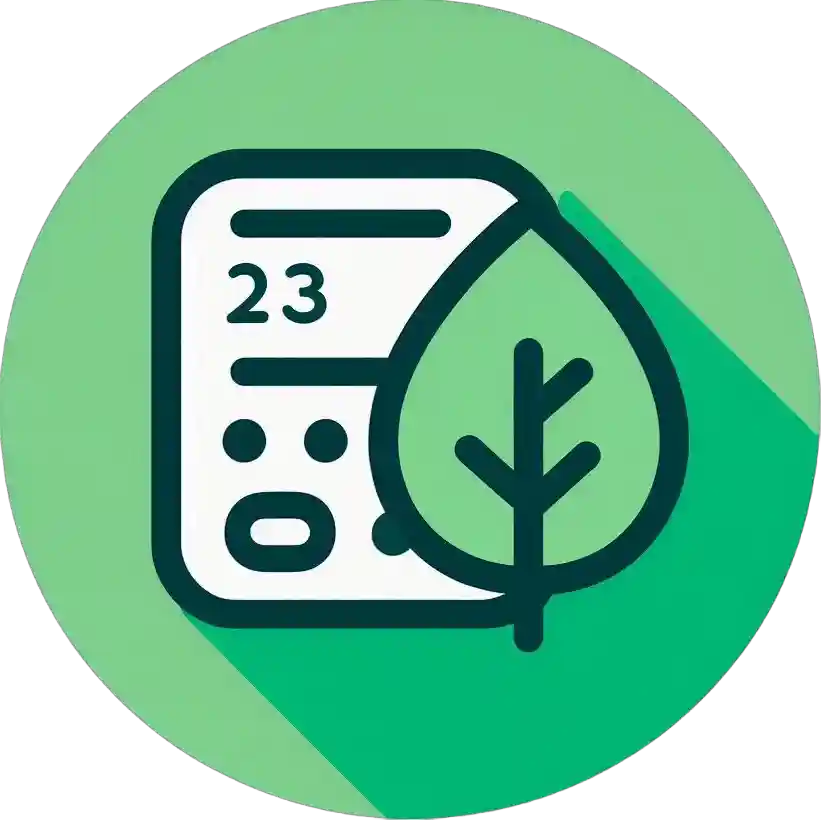

EcVida
Calcula tu Huella de Carbono
Calcula tu Huella de Carbono
La huella de carbono representa la cantidad total de gases de efecto invernadero generados por nuestras actividades cotidianas. Esto abarca tanto las emisiones directas, como el uso de transporte, como las indirectas, derivadas del consumo de bienes y servicios manufacturados.
La calculamos considerando varios factores de tu vida diaria:
Completa este formulario para conocer tu impacto ambiental y recibir recomendaciones personalizadas
Basado en tus resultados, estas acciones pueden ayudarte a reducir tu huella
Impacto: ...
Si cada persona en el mundo redujera su consumo de carne a la mitad, podríamos reducir las emisiones globales de gases de efecto invernadero en aproximadamente un 5-10%.
Fuente: ONU para la Alimentación y la Agricultura (FAO)
El cambio a bombillas LED puede reducir el consumo de energía para iluminación en un 80-90% en comparación con las bombillas incandescentes tradicionales.
Fuente: Agencia Internacional de Energía (AIE)
Un solo árbol puede absorber hasta 30 kg de dióxido de carbono al año y producir oxígeno suficiente para que respiren 2 personas.
Fuente: El Mundo Ecosostenible
Reciclar una tonelada de papel evita la tala de hasta 20 árboles, además de ahorrar 7.000 kWh de energía y 5.000 litros de agua.
Fuente: MAPFRE